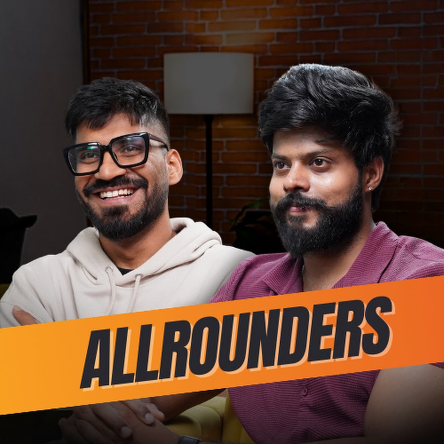

Film-making
Collaborative work
Producer · IFFK 2025 — Selected & screened
Me and my friends produced this movie, which was selected and screened in the International Kerala Film Festival in 2025.
YouTube · @kitchensinkdrama ↗Creative collective
kitchen sink drama · Kochi
Involved in everything from ideation to post-production with my friends back home.
YouTube · @kitchensinkdrama ↗
Freelance videography & production
vox6 studios · Kochi
Videography and production work for the recently set up studio.
Website · vox6studios.com ↗Video editor
Mohammed Zohaib · Dubai
A real estate investing advising channel.
YouTube · @MohammedZohaib86 ↗Freelance videographer
A creative studio for conscious, sustainable and impact-led brands. I shoot video for their projects.
Instagram · @studio_urli ↗
Freelance videographer
Allrounders · 122K subscribers
A Kannada YouTube channel mixing podcasts, travel vlogs and fun challenges. I shoot for them freelance.
YouTube · @theallrounderrs ↗Freelance videographer
Genius Fitness Arena · Arunachal Pradesh
A gym in Arunachal Pradesh. In May 2026 I shot and edited content for them, including a trainer showreel for Rishiraj Baruah.